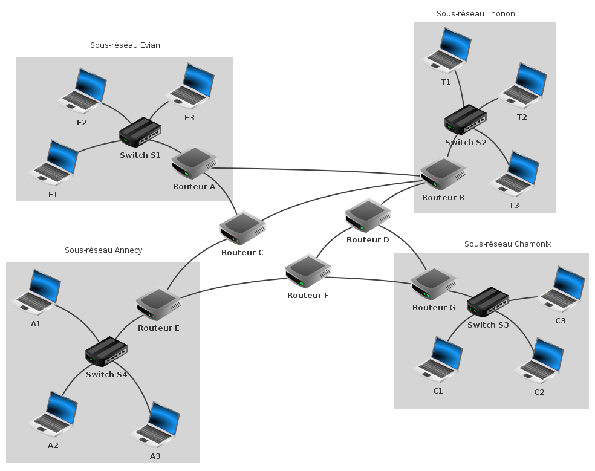
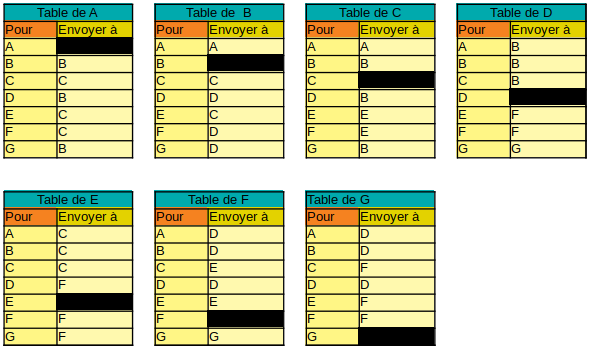

On considère toujours le réseau "mini-internet" ci-dessous.

Les tables de routage de chaque routeur sont rappelées ci-après.

D'après ces tables de routage, le chemin pour envoyer un paquet du routeur A vers le routeur F
est : A-C-E-F.
Il faut regarder dans l'ordre la table de A, puis celle de C, puis celle de E et enfin celle de F,
en se limitant à l'avant dernière ligne de ces tables, c'est à dire celle "Pour F".
Compléter les zones ci-dessous avec les chemins permettant d'envoyer un paquet d'un routeur vers un autre.